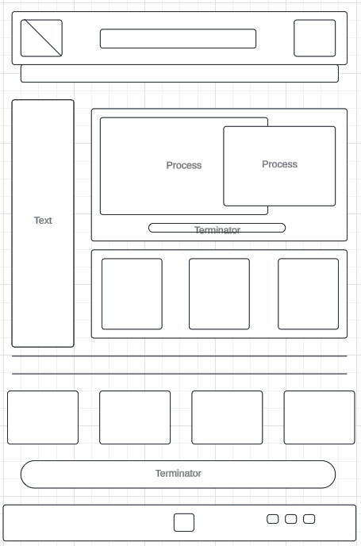

Overview
Purpose
Chamber Site Plan
Dreiser Morales
WDD 230
Audience
this will be a chamber comerce of a market of fruits which will provide inforation about the prices and rates of incrmement i the price information about the comerces and new about the market on teh city The website could increase the visibility of each srote inside teh market make for customers easy to find what they need and copare prices
Branding
Website Logo

Style Guide
Color Palette
Palette URL: "https://coolors.co/3c1347-2e104c-113834-0e2b3e-5d2217"| Primary | Secondary | Accent 1 | Accent 2 |
|---|---|---|---|
| #5D2217 | #113834 | #3C1347 | #0E2B3E |
Typography
Heading Font: Gloria Hallelujah
Paragraph Font: Saira
Normal paragraph example
Many comerces in this place are known because the time they have worked in the market place but it could be more efcient for each of them oto have spounsors whitin a website to increase the range of visits the get eah day and keep the prices up to date.
Colored paragraph example
Many comerces in this place are known because the time they have worked in the market place but it could be more efcient for each of them oto have spounsors whitin a website to increase the range of visits the get eah day and keep the prices up to date.
Navigation
Site Map
Content
Perspective Understanding
Why Will People Come to My Site?
Why will people come to my website?
having the oportunity to verify prices and locations of the elements needed will create a etter oportunitie to owner to create a aplan of buying while they are in the market and compare prices at the moment and also fot each provider will be the same oportunity to have a competitive price and disclouse benefits and fruits other does not have, irt will create equity to the markt with same opportunitie sto sell.
Images for the Home page


Question Anticipating
Waht questions will y visitors expect my site to answer for them? Workin on it
Images for the Page 2


Interaction Envisioning
What types of activities will visitors want to complete on my site?
Working on it
Images for the Page 3


Wireframes https://wireframe.cc/MiuC0r
Create three wireframes for your site. One for each page and list them here
Home
This is the home page. Help others get to know me and my contact information.
Project Page
This page will show any of my programming project.

feedbeck Page
This page will allow others command to give me feedbeck.